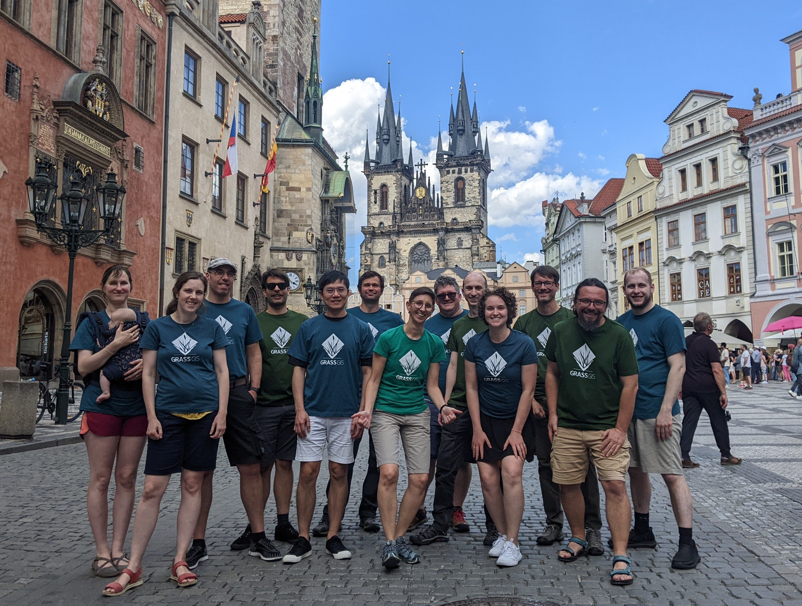

State of GRASS GIS
NCSU GeoForAll Lab
at the
Center for Geospatial Analytics
NC State University

FOSS4G NA St. Louis, September 9-11, 2024
Vaclav (Vashek) Petras
- Sr. Research Software Engineer at NC State's Center for Geospatial Analytics
- GRASS GIS: Core Development Team, Project Steering Committee
- OSGeo: Charter Member, GRASS GIS is an OSGeo Project


Community
Thanks to all those involved!GRASS GIS
- geospatial processing engine
- 400+ processing tools
- 400+ more tools in GRASS Addons

Releases
- 8.4.0, July 2024 Current version for everyday user
- 8.5.0 Preview, Daily Latest reviewed functional code
- 7.8.8 Legacy, August 2023 Maintained legacy version for some production systems
New in 8.4.0
Tools: More Machine Learning
Supervised classification with Support Vector Machines
- i.svm.train: Train a Support Vector Machine
- i.svm.predict: Predict with a Support Vector Machine
Tools: More Topology Handling
v.fill.holes: Fill holes in areas by keeping only outer boundaries
by Vaclav PetrasTools: Better View and Ray Tracing
r.horizon: Output for multiple points, distances, and many other improvements
by Anna Petrasova, funded by NSF Award #2322073, granted to Natrx, Inc.Interfaces: JSON for Text Outputs
JSON output format support(format="json") in multiple tools (v.db.select, t.rast.list, …)
v.db.select roadsmajor format=json
With better integration in Python:
import json
import grass.script as gs
data = gs.parse_command("v.db.select", map="roadsmajor", format="json")
for row in data["records"]:
print(row["ROAD_NAME"])
More coming in 8.5 (r.report, r.info, …)
by Anna Petrasova, Vaclav Petras, Huidae Cho, Kriti Birda, Corey White, and othersLocations are now Projects
The Python API, command line, and GUI are now using project instead of location for the main component of the data hierarchy.
-
~/data-
missouri(location → project)interstate_44(mapset aka sub-project)
-
CLI: --tmp-project with --exec
--tmp-location is now --tmp-project
grass --tmp-project EPSG:3358 --exec \
r.viewshed input=elevation \
output=viewshed coordinates=642964,222890
--tmp-location continues to work
Python API: Simpler Creation of Projects
grass.script Python package:
Greatly simplified the creation of new projects in Python without a running session (no more chicken and egg problems)
import grass.script as gs
import grass.jupyter as gj
gs.create_project("cordoba_utm21s", epsg="32721")
gj.init("cordoba_utm21s")
Python API: Animations and ipyleaflet
grass.jupyter Python package:
-
New
grass.jupyter.SeriesMapclass for animating series of vectors or rasters (temporal animations already available) - New option to create a maps with ipyleaflet
m = InteractiveMap(map_backend="ipyleaflet")
m.add_vector("streams")
m.add_raster("elevation")
m.show()
s = gj.SeriesMap(height = 500)
s.add_rasters(["elevation_shade", "geology", "soils"])
s.add_vectors(["streams", "streets", "viewpoints"])
s.d_barscale()
s.show()
GUI: New History Browser Panel
 by Linda Karlovska with a GRASS GIS Student Grant
by Linda Karlovska with a GRASS GIS Student Grant
Project Roadmap
Addon Tools: Digest Data with EODAG
download, import, preprocessing, cloud detection, and masking of remote sensing data with EODAG (Earth Observation Data Access Gateway)

by Hamed A. Elgizery, Veronica Andreo, Stefan Blumentrath
Addon Tools: Wind-water Interactions
r.windfetch – distance which winds blow without obstruction

by Anna Petrasova, funded by NSF Award #2322073, granted to Natrx, Inc.
Funding
NSF Grant Lead by NC State
- Starting year 2 (out of 2)
- NSF grant awarded to NC State, ASU, NMSU, Yale
- to enhance infrastructure
- to revise contributing guidelines
- to support community building
Note: The NSF program is aiming at sustainability, not adding features, fixing bugs, or ongoing maintenance.

Financial Contributions

- Contributions through Open Collective partially support face-to-face meetings and student grants.
- We would like to finance ongoing maintenance.
- Talk to me if Open Collective does not work for you.
Community
PSC Elections
Project Steering Committee Elections: 4 out of 9 members for next 6 years
Broad community can nominate and anyone can be nominated (September)
Voting restricted to recognized contributors and participants (October)
Community Meeting 2024
12-hour work days, 8.4.0 release, CI, parallelization, … grass.osgeo.org > Latest news > Report from the GRASS Community Meeting Funding: US NSF (Award 2303651), OSGeo, FOSSGIS, mundialis, INBO Research Institute for Nature and Forest, individual donors
Mentoring and Student Grants Program
- Mentoring to integrate GRASS GIS into your workflows (open now)
- Student grants to contribute to GRASS GIS (call open for 2024/2025)

Join a Working Group
-
Groups:
- Geoprocessing Engine
- Open-Source Ecosystem
- Documentation and Education
- Community Engagement
- See wiki for details!
Highlights
Tools: Temporal Algebra
D = if(start_date(A) < "2005-01-01", A + B)
Sum maps from A with maps with equal time stamps from B which are temporally before Jan 1, 2005

by Thomas Leppelt and Soeren Gebbert
Tools: Skyview
r.skyview – non-directional alternative to shaded relief
by Anna Petrasova
Tools: SLIC
i.superpixels.slic - image segmentation using SLIC superpixels
by Rashad Kanavath and Markus Metz
Tools: Fast Hydrology Algorithms
r.accumulate – fast weighted flow accumulation, watersheds, stream networks, and longest flow paths using a flow direction
by Huidae Cho
Tools: Vector Topology Cleaning
v.clean – automated topology with outputs for additional checks

by Markus Metz, Radim Blazek, and others
Tools: Urban Modeling
r.futures - set of tools for urban growth modeling

by NC State Center for Geospatial Analytics

Ask a question, get a special sticker.
vpetras@ncsu.edu,
@vaclavpetras, @wenzeslaus
wenzeslaus.github.io/grass-gis-talks
This talk was funded by the US National Science Foundation (NSF),
award 2303651.